The Ptarmigan Traverse
Theron Welch’s account is here
- <a href=#Monday>Monday - Car shuttle, hike to Red Ledge camp
- <a href=#Tuesday>Tuesday - climb of Mt. Formidable
- <a href=#Wednesday>Wednesday - climb of Old Guard Peak
- <a href=#Thursday>Thursday - climb of Spire Point
- <a href=#friday>Friday - climb of Dome Peak and Dynaflow Tower
- <a href=#Saturday>Saturday - hike out
<a name=monday></a>
Monday <a href=#TOP>(To page top)</a>
Two days after returning from the awesome Bugaboo/Selkirks trip with Robert and Mark, I was driving behind Theron as we set up our car shuttle for the Ptarmigan Traverse. We dropped off my car at the Downey Creek trailhead, and continued up to Cascade Pass, finally ready to begin hiking around 10:30 am. The long hours of driving had definitely surprised us, and kind of lowered my ambitions for the first day. Our packs felt heavy with 6 days of food and fuel, along with sleeping gear and minimal climbing equipment.
At Cascade Pass we took in the view, then kept going towards the Cache Glacier. A guy came down and told us about climbing Mt. Formidable, something we planned to do the next day. The view of Sahale Arm is spectacular from this point about 500 feet above Cascade Pass. It reminded me of something I’d read about the Emperor Maximilian who described the Tyrol (a mountainous region in Austria and northern Italy) as a quilt that could be shaken for resources. Sahale Arm resembled that quilt, with people going up and down the trails, and a host of marmots, deer and other “game” animals present.
There was no need to rope up on the Cache Glacier, and here we took advantage for the first time of a trip tradition - “dipping our cups.” This phrase would be used in innumerable variations, like “come! let us dip our cups together in this fine mountain stream!” and “lo! let us…” you get the picture!
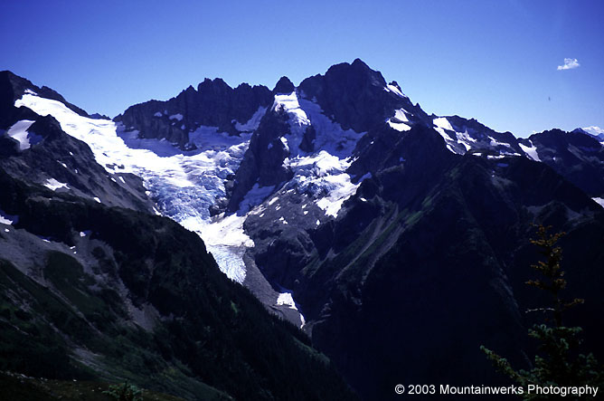
Mt. Formidable from Cache Col.
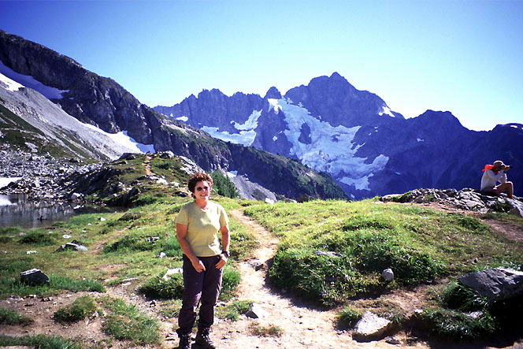
Peggy Goldman at Kool-Aid Lake. Theron in candid pose.
We stepped over a moat at the top of the glacier, and suddenly had the north face of Mt. Formidable in front of us, and a whole new deep valley to look at. We hiked down sometimes awkward scree and rocks, realizing we’d probably see a lot of this kind of terrain in the low snow year. Just as I was thinking we’d have to be careful and not twist an ankle, we came to Kool-Aid Lake and met Peggy Goldman and her husband. He had torn a muscle while hiking among the rocks. At that moment a helicopter arrived to take him to a hospital. He was in good spirits though, having enjoyed a great climbing season thus far! Peggy had just climbed the last of the 100 highest peaks in Washington the day before with Mt. Formidable. That’s a very impressive achievement. I consider myself to be someone who climbs a lot, but I’ve only climbed about 15 of those over the years.
Peggy would hike out the next morning. She gave us some advice for the climb of Formidable, saying we should bring a rope even though the route is “3rd class.” She also said there were nice camp sites after Red Ledge with a great view of the mountain. Theron and I hiked up there, across the crumbly Red Ledge, and up into a heather and boulder garden that was really pretty. We set up our first camp, eating dinner while studying the north side of Formidable. Such a great camp. We had our MP3 players which was great. As it turned out, I snored terribly, and Theron had to wake me up a few times. That was the last night he slept in the tent, preferring the out-of-doors to my raging inability to be quiet when sleeping. Sorry, Theron!
<a name=tuesday></a>
Tuesday <a href=#TOP>(To page top)</a>
The next morning, Formidable looked great in the warm sun and blue sky. We walked for a while, soon roping up for our first real glacier: the Middle Cascade. We passed a few crevasses, each of us getting used to the idea of moving farther away from civilization and chance of a timely rescue. I think I was more cautious on this glacier, but by the end of the trip I was bull dogging us towards the more dramatic ice bridges. I found the route finding on the glaciers to be a really exciting part of the trip. Especially as you make bolder choices, you can’t be completely sure of what is ahead, and there is a pleasant tension as you follow your nose.
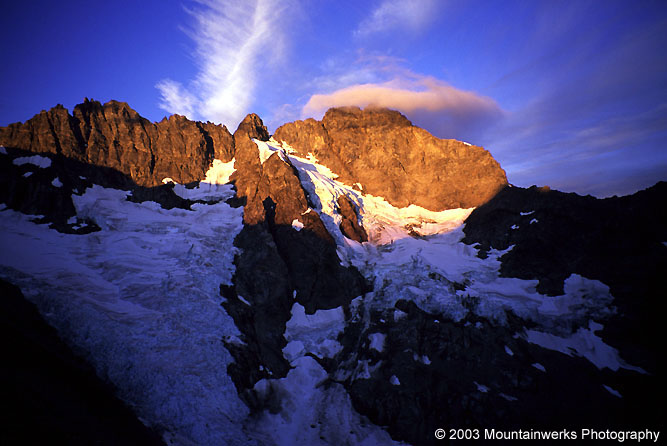
Mt. Formidable in morning light.
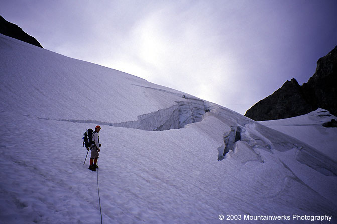
The Middle Cascade Glacier.
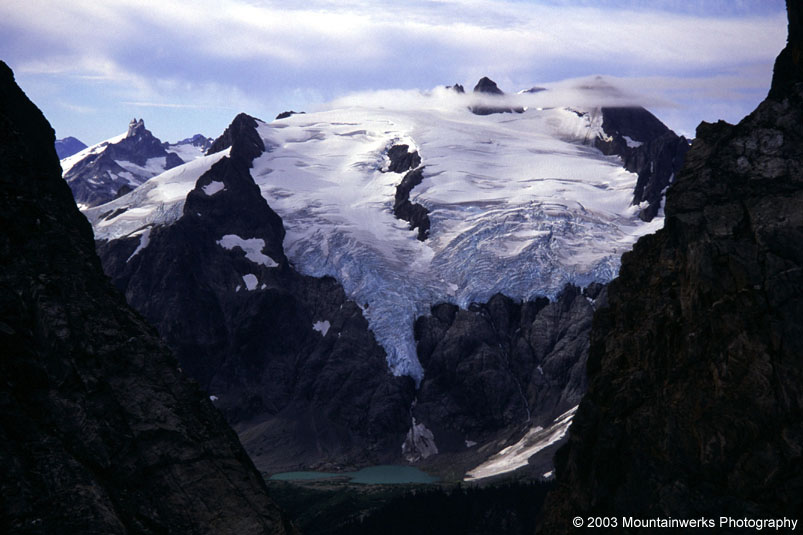
Old Guard Peak and the Le Conte Glacier.
Soon we reached the col where a dramatic view of Sentinel and Old Guard Peaks awaited. We went down some moderately steep hard snow, our first chance to exercise “french technique” with heavy packs. We’d been seeing bear tracks near the col, and amazingly they went down this terrain. We crossed a bench of rock and snow, drinking from a stream along the way. Reaching our turn-off to climb Mt. Formidable, we dropped our packs and consolidated gear for the hike. Easily over the col, then down a loose gully, we made our way onto permanent snow fields and ribs of the broad south face. Our advice from Peggy was to keep going left longer than you think you should. The route seemed to end at a steep rib, but we found that by scrambling up onto the rib, the route can be picked up again. Another party was wandering far to the east, having missed this notion. We yodelled to them that we’d found the way, and they began hurrying over.
After a pretty hike up the rib, we put on crampons for a snow field. At the top of this, we began scrambling 3rd and 4th class rock for a long twisty journey to the summit. There were some exposed ledges to cross, and one notable gully marked by cairns that would have seemed improbable if not for faint signs of passage. Above this, more loose scrambling led us up, where we lost the route and ended up climbing a secondary summit, with the true summit across a steep ridge to the west. We found a rappel station, and abseiled into a notch where we could easily climb to the summit.
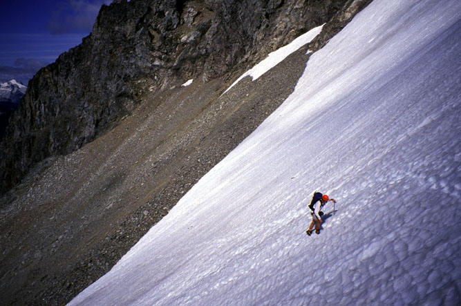
Theron on snows of Mt. Formidable.
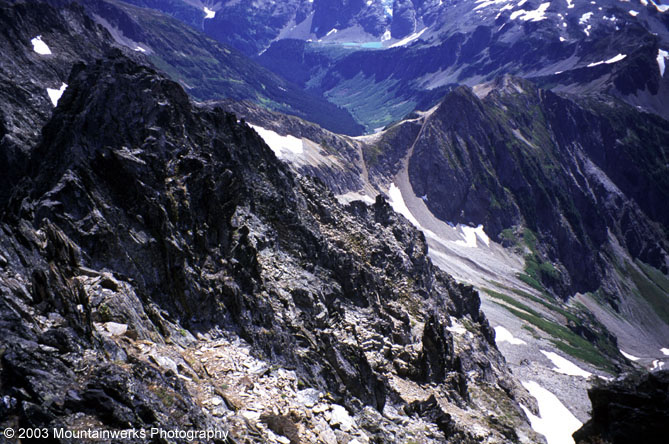
Gullies and ledges high on the peak.
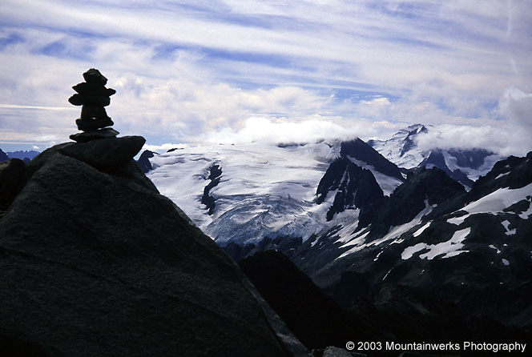
Looking south to the Le Conte Glacier from the climb.
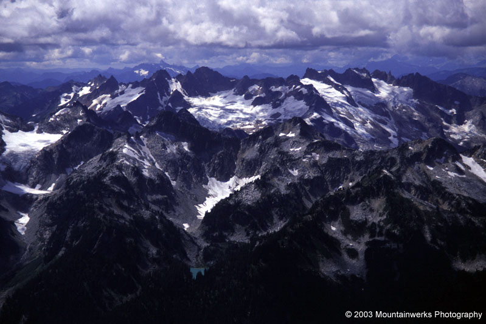
The beautiful Buckindy Range to the west.
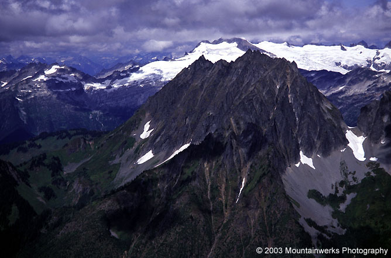
The back side of Johannesberg Mountain.
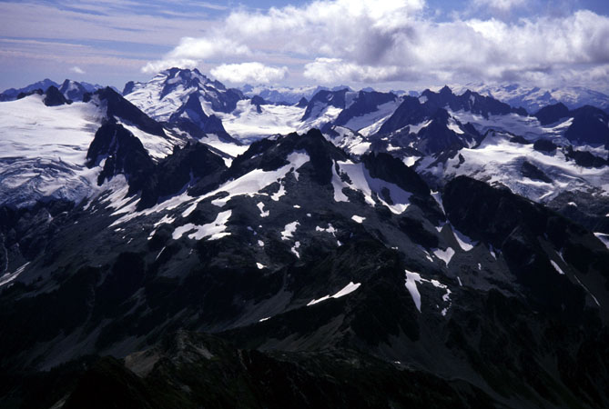
A look south, to where we are going!
It was a great view, with tantalizing scenes of what was to follow: miles of ice and rock, surrounded by mysterious green valleys. The back side of Johannesberg Mountain was loose, craggy and massive. We saw Jens and Loren’s entry in the summit about a North Face climb. We promised to come back one day for the North Ridge. As it was though, the standard route offered pretty nice scrambling and interesting route finding. I kind of expected to be keening for a north side route, but this was plenty enjoyable. We made one rappel on the way down, possibly foolish due to loose rock that barely missed Theron.
After the hike back up the steep gully and down to our packs, we were fairly tired. It didn’t take long to reach Yang Yang Lakes, very pretty in the late afternoon. Here we were realizing that the distances to cover from camp to camp are not that great. It’s stopping for climbs along the way that makes it more than a 3-day trip. For example, you could reach Yang Yang Lakes on day one.
We went for a short hike, trying to guess where the route would go the next morning. It is not completely obvious, but you’ll figure it out when you go. The party that was on Formidable beat us to the lake, getting a fantastic camp site (they left the true summit for another day, so didn’t have the mandatory hour of gazing at the Beloveds). So camp wasn’t that great, but I got some good reading in while Theron sat by a stream and took some pictures after dinner. We allowed ourselves a nip of Tequila, and another in the morning to warm the region about the chest and torso. Tee hee!
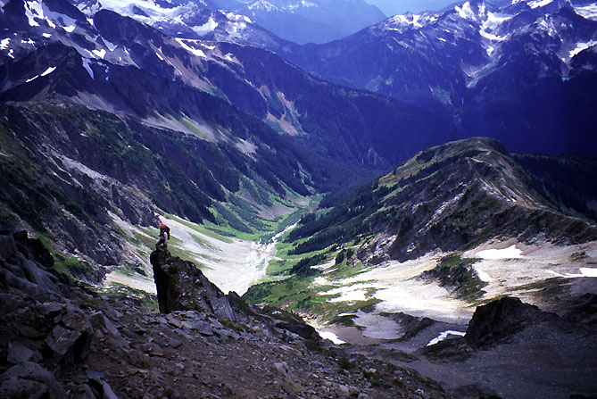
Theron above the Drop Creek valley.
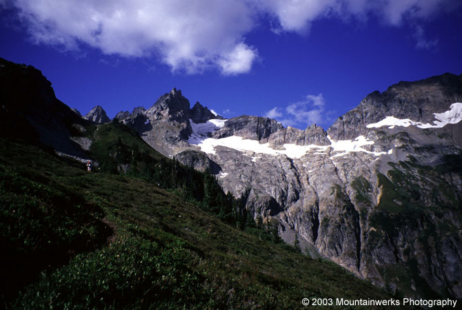
Flanks of Mt. Formidable with Spider Mountain on the right.
<a name=Wednesday></a>
Wednesday <a href=#TOP>(To page top)</a>
Hiking early, we followed the steep trail up a boulder field to a steep entry to the broad heathered ridge directly above us. This was one of the most beautiful spots of the trip: the North Arm of Le Conte Mountain. A heather garden with granite slabs, golden in the morning sun. It was a great place to spend the morning.
Reaching snow beneath the upper mountain, we decided not to climb it. Part of it was the terrain that lay ahead: we were kind of unsure how we’d navigate steep-looking terrain of the Le Conte Glacier, and we definitely wanted to climb Old Guard or Sentinel. That old summit feeling wasn’t there for Le Conte. As Chris Koziarz would say, we didn’t “smell the summit.”
So we continued on snow and rock, traversing the east side of a ridge. Once I reached a dead end at a steep 100 foot drop off. I scrambled up rock in crampons for 250 feet to get around it, then continued on glacial ice back down the other side. I was enjoying trying to be smart about keeping crampons on. Of course, that mostly played out as scraping across rocky sections in them. Theron was more careful with his ‘pons, preferring to remove them for these changes. I can report however, that my aluminum Stubai crampons (purchased from Pro Mountain Sports, by the way, gotta plug that awesome store), are still in great shape!
“Gotta be ready for ‘The Winter of Mixed!’” I would cry to Theron.
We finally roped up for the glacier after a cooling drink of ice water. Pretty soon, we came to a crux spot. Faint tracks led into a maw that we didn’t approve of. But there was no way around! (we checked). So we followed, and were rewarded with a short steep ice step that took us easily through. I chopped one handhold more to increase the drama than for anything else. But it gave me a secure stance to take a picture of Theron!
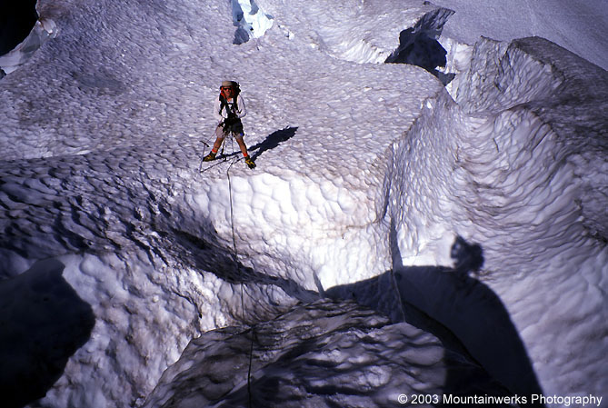
Key ice bridge on the Le Conte Glacier.
Energized by the fun glacier crossing, we dropped our packs near the 7300 foot col to the South Cascade Glacier, and set off southeast to the base of Old Guard Peak, having decided it looked the “coolest.” Traversing above a large bergschrund, we gained the notch between the two peaks. An icy gully led us to an awkward step onto a rock slab. We actually carried an ice screw, and here it got it’s only use of the trip! We used it to anchor our crampons and axes to the ice, something necessary because there was nowhere on the rock to put them, and the moat between the rock and ice was deep and dark.
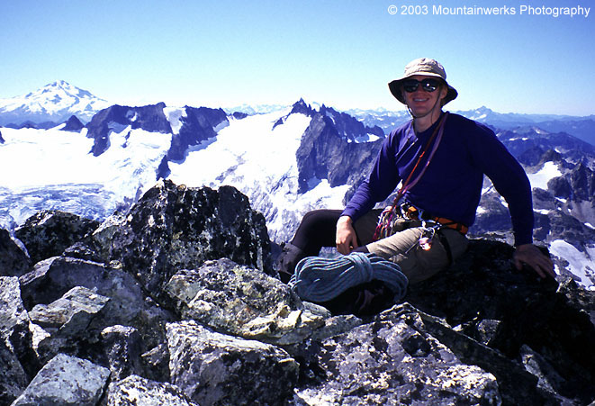
Me on the summit of Old Guard Peak.
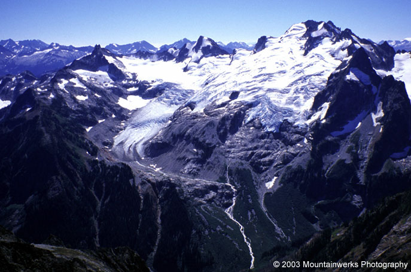
The Chickamin Glacier, wow.
We enjoyed the route-finding up indistinct rocky terrain. The bergschrund below kept our attention focused on the next hand and foot holds. These “scrambling” peaks were definitely more challenging than I expected, and I, jaded, had just returned from the Bugaboos. But it made the summit more rewarding. In fact, we eventually declared the view from Old Guard Peak the best of the trip. Agnes Creek and the Chickamin Glacier were stunningly beautiful, especially the sweep of the lower glacier as it reaches it’s terminus 1000 feet above the creek. Deep gorges below the Dana Glacier contained waterfalls, and Elephant Head Peak looked amazing. I think it’s an under rated peak of the area, we are going back for it. It took a long time before we were ready to leave.
After carefully crabbing down to our ice gear, we retraced our steps down the glacier. It was a great feeling to be romping on a remote glacier like it was our own backyard. The sun shining down, and lots of little jumps to make over crevasses. We got down to a gathering of people near our packs. It was two sets of two people doing the traverse. We talked for a while, continuing together on a snow traverse above the South Cascade Glacier.
When it seemed like the right spot, Theron and I stopped for some food, and to climb Sentinel Peak. The others continued on ahead. I ate a Nutella sandwich - I was pretty over the moon about that. Theron had developed a taste for Nutella too (the European Hazelnut Spread!). We hiked up steep heather, getting great views of the glacier below. We weren’t really on the normal route, we’d climbed up the south ridge to where it became loose and craggy. We gave up the climb here, not feeling like wending our way among crumbly towers just for the tick. White Rock Lakes and their fabled beauty was on our minds instead.
On the way down, I saw a bear loping across the glacier. He came very close to where (yikes!) we’d left our packs. If he smelled the European Hazelnut Spread, we might have been done for. Or at least reduced to begging.
We came down making loud silly noises to scare him away. I rounded a corner and saw that our packs were unmolested and the bear was gone. That was a close one! Soon we were descending steep scree to the glacier and hiking across. There was no need to rope up on the broad snow field, and we were thankful to reach a patch of shade on the opposite side. More steep scree and boulder fields led down to the lakes. I’d gotten better at “boot skiing” on the stuff, I think my tendency to always wear my gaiters made this easier (less pebbles in my boots).
The scenery at the lakes was even better than we expected. Of course, we were a big crowd now, and our tendency to climb peaks always made us late for the good camps. We found two decent flat spots about 100 feet apart, and fell to snapping pictures, napping, drinking, then eating dinner. After dinner all eight of us gathered and passed around our bottle of white tequila, while we marvelled at the terrain ahead. It looked very improbable and steep. All of us were “traverse virgins,” so we were excited about the discoveries to be made the next day. Theron and I identified a distinctive snow patch that would be a good marker if we could find it the next day.
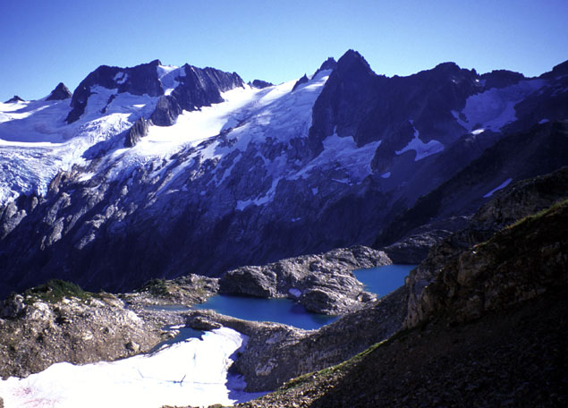
The White Rock Lakes, with Spire Point behind.
I didn’t set up the tent, but I eventually got cold enough to wrap it around me at 3 in the morning. Darn, that made my sleeping bag wet though. My summer bag is really small and light, but it needs a little help from a tent or bivy sack.
<a name=Thursday></a>
Thursday <a href=#TOP>(To page top)</a>
Ah, Thursday morning, day four of the trip. We took off on a brushy trail that led down and into a rocky bowl. Theron had a scare when I went too far ahead and he saw a side trail, wondering which way I had taken. I often was a bit ahead, too excited to stop, and I had an easier camera setup than Theron. Oh, I didn’t mention how much I liked having a Platypus water bag. My pack’s “crampon pouch” holds it really well, and it’s very nice to keep drinking even without stopping. And we never carried more than a quart at a time due to the abundant streams. We trusted the water, getting away without using iodine pills until the last day of the trip. Some would describe this attitude as careless. I’m afraid I’ll have to be burned once to give it up, I understand there is a risk of illness. However, it feels too good to just fill my tin cup from the stream and drink. The cup is stored on a carabiner with my camera, easily used without stopping. Theron and I both enjoyed this aspect of our week out, and made all kinds of jokes about it.
Another great joke was the alter-egos we’d developed. These characters had a curious fixation on the bottle of tequila, and could mutter for 10 minutes at a time about how you don’t take a man’s bottle from him. You can take a man’s fambly away, but not the BOTTLE, no never that.
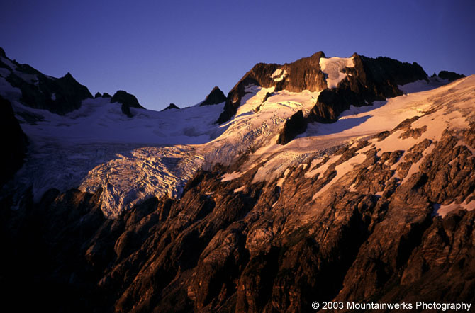
The Dana Glacier in the morning.
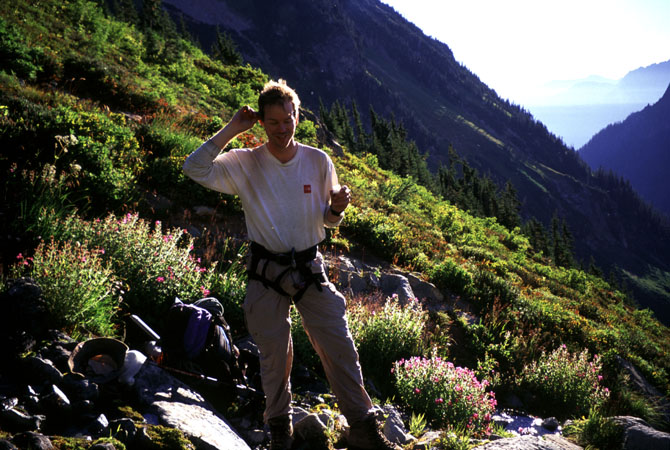
Theron in a candid pose.
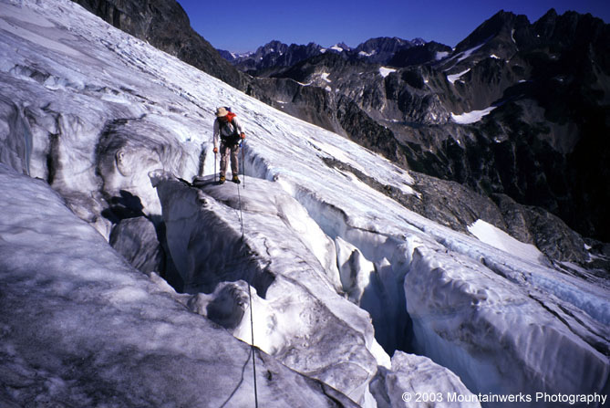
Exciting crevasse crossings on the Dana Glacier.
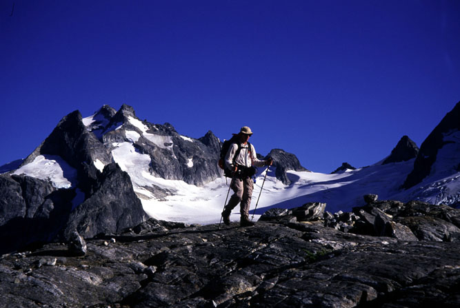
Theron, aka Der Wanderer.
We crossed patches of ice then rock. Back on snow, we reached the first crevasses and stepped across. A long rocky section was walked in crampons and we carried coils between us. Everyone else apparently went down a dirt gully here for 200 feet and got onto gentle snow fields to avoid the glacier proper. It was fun to weave among the crevasses instead for the most enjoyable glacier meandering of the trip. Following fins of ice, we sometimes cramponed down to a shelf and up the other side. Theron led us onto a gentle but distinct fin leading towards Spire Point. We had to be careful crossing some melting snow bridges on the upper part. Suddenly we were on top, eagerly dropping our gear and scrambling to the ridge crest over large blocks. Now we could see Itswoot Ridge and Cub Lake, glimmering in the sun.
It was time to enjoy some “Hit” Cookies. These are calorie rich, and only cost $1.00 for a pack at REI. One pack serves as a hearty lunch. Theron looked around for a place to take off his boots and not lose them. I recognized the distinctive motions and facial expression that signaled his desire to do that, and divined his wish before he said anything. That made us laugh, I guess we’d gotten to know each other pretty well.
It was interesting to compare what we did. Seeing how important it was to Theron to wash every day, I wondered why I didn’t mind going to bed relatively dusty. I rarely took off my boots during the day, but Theron thrived on that. I needed to eat a lot more than him, I think my dinners were almost twice as large. I was the rope coiler/uncoiler, and Theron got water for dinner most of the time. I would turn in early and read a book, while Theron sat up taking pictures until the last light. I reckoned we could get along all winter on an ice floe if we had to.
Anyway, it was time for our climb of Spire Point. We followed a rocky slope to the west to reach the North Ridge. Coming back east a few paces, we found the “obvious gully,” and Theron took off on a 25 meter doubled rope for the first pitch. He reached a good ledge after some fun 5.5 climbing. There was a sling here, which we used as an anchor. Theron then continued up and to the left, eventually committing to a leftward traverse above a blank, mossy slab. He did a great job on the serious pitch, especially as gear was very sparse and hiking boots felt insecure on the small footholds. I followed, kind of alarmed when I cleaned some gear and the rock supporting it nearly fell out when I hung on it for a moment. The pitch ended at an incredible stance on the northeast side of the spire. Theron wanted to lead the last pitch too, so I belayed him out for the easiest section of the route, though it had the best views. Soon I joined him on the summit.
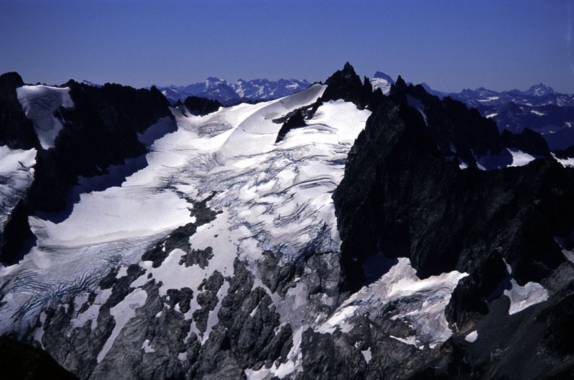
Spire Point from the north.
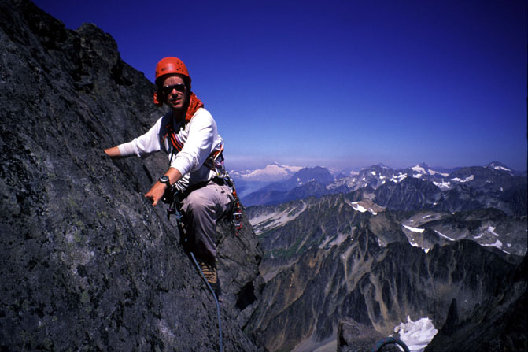
Theron on the third pitch of Spire Point.
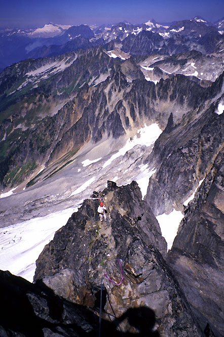
Looking down a ridge from the summit. Note the fire!
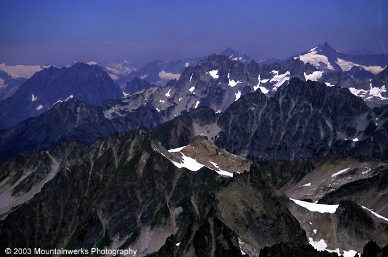
A view back north.
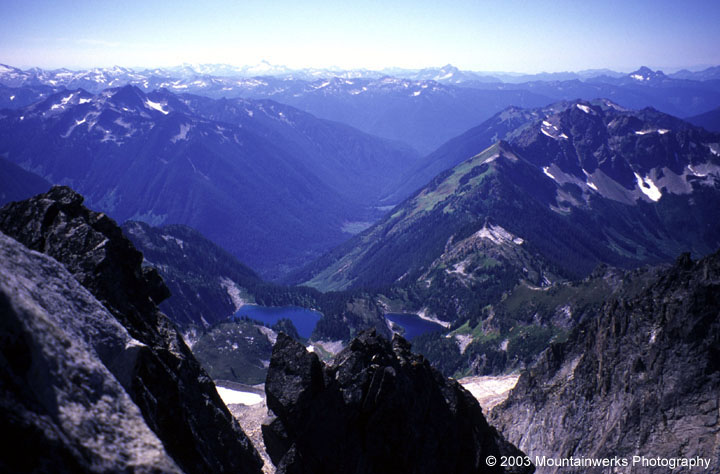
A view south, with Cub Lake on the right.
How often can I praise the views from summits along this traverse? The surroundings from here were much craggier with countless sub-spires and ridges. You could climb for days around here. The south face seems like a great route, and I even saw two people hiking up to do it (big crowd out here, eh?). We downclimbed a bit, then made two rappels and scrambled the rest of the way down.
Now we descended Itswoot Ridge, first on snow, then on rock and scree for almost 2000 feet. Once I freaked out when Theron led us down a chillingly steep heather slope. I had to use my ice axe to climb back up and go down the normal trail in the scree. He has much greater tolerance for tottering on steep heather than I do! But in the end, we reached the camp on the ridge, and drank deeply from cold streams. I haven’t talked much about the weather, because there was none. Except for Tuesday, which had some afternoon clouds, every day had been hot and cloudless. On the sunny south flank of the mountain, even I had to enjoy a cold foot bath. We shared camp with two parties of two from the previous day. It looked like the hike to Dome Peak would be an extravaganza of boulder fields for miles.
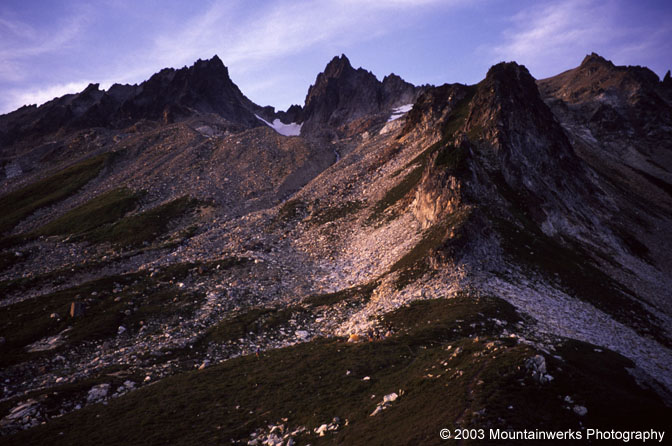
This picture is taken from camp on Itswoot Ridge.
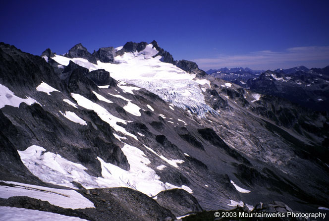
Dome Peak from camp.
<a name=friday></a>
Friday <a href=#TOP>(To page top)</a>
In the morning, we dutifully set off first, following trail, then cairns, then finally just following our noses up boulder-strewn slopes. A few hours passed uneventfully. Clouds had come in, and seemed to be lowering. The summit of Dome was occasionally obscured. We reached the glacier, which provided a gentle walk up to a bergschrund which we passed on the right. Taking the easiest way, we went back left and got onto rocks where we could drop axes, crampons and rope. A fun scramble led us up the ridge to an exposed and tricky final move. Theron was pretty amazed by it, and we took some pictures of the action.
Clouds were moving in, but we got some of the final views of Glacier Peak to the south, and mysterious mountains to the east. Soon, the other two parties arrived, and we took turns taking pictures and talking about the trip. We’d all thought it was a great success.
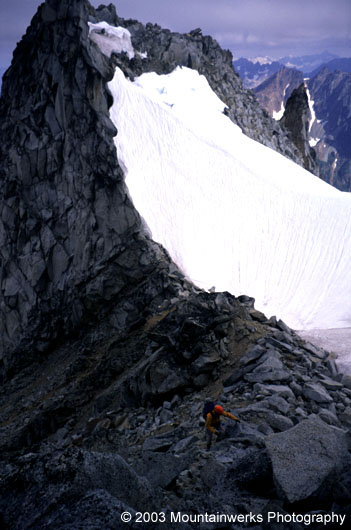
Ridge on Dome Peak.
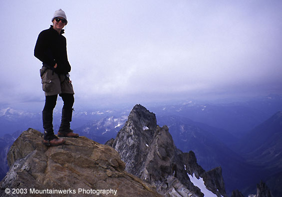
Me posing on Dome Peak.
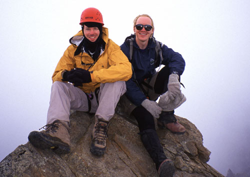
Theron and I on the summit.
On the way down, Theron lobbied to climb another peak, such as Dynaflow Tower on the other side of the glacier. I was pessimistic, pointing out that the weather had changed, and we could end up hiking out Bachelor Creek in the rain if we stayed overlong. He left the decision to me. Of course, as we descended the glacier, my feet strayed to what was true and right - to Dynaflow Tower! So what if we get wet later, climbing such a neat looking crag would be worth it!
Theron put me on belay right off the snow, and I swarmed up excellent granite flakes and cracks to a good belay stance. After Theron arrived, he belayed me around a corner where the rock changed dramatically. The gray granite was replaced with rotten, black and brown boulders and shards barely sticking to the crag. I tried climbing straight up some shards, then realized the folly of that approach. A devious traverse across the time bomb led to steep but more solid ground. Then I traversed back right to reach a notch where I could set a primitive belay. It was hard to trust anything. My “anchor” was a nut looped back on itself around a column of rock. I marvelled once again at “Beckey 4th class,” remembering that I had made a technical “drop knee” move on the steep pitch. I rated it 5.6 R, at least in hiking boots.
I hadn’t noticed, but Theron did notice that the wind had picked up and we were sheathed in cloud. He had opportunity to wonder if I was ok out of sight and around a corner, moving so slowly for so long. He understood after following the pitch!
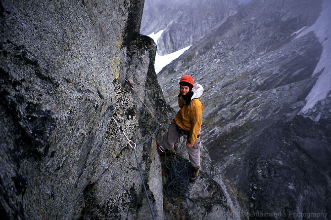
Theron on Dynaflow Tower.
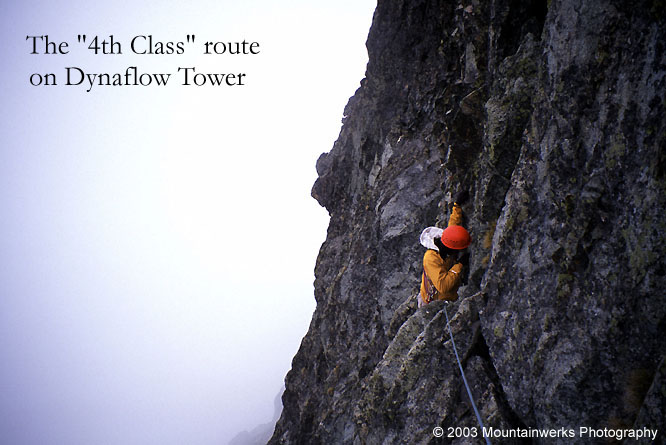
On the steep and loose second pitch.
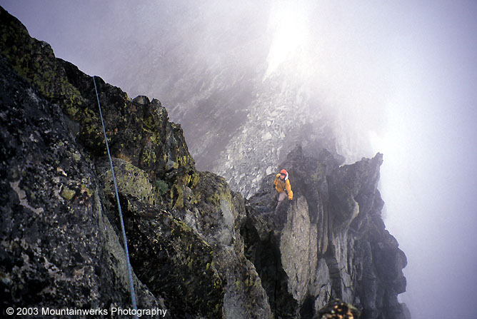
Taken from the summit...very loose!
The last pitch was more of the same, making up for being less steep by presenting even looser rock for climbing. I tossed 10-15 dangerously stacked shards of rock off the north side of the peak, and the lonely sound of their crashing below seemed to take a long time to be heard. I got one nut in, but it was only psychological protection. The summit was a rotten shard of dark gray in a light gray cloud world. “Ugh,” I thought. We were glad to have done the climb, but had probably never seen a peak that has such a dramatic change in rock quality, luring you upward into a jigsaw puzzle!
Getting down was odd. We left a sling at our belay below the summit, and I rappelled straight down, hoping for some kind of anchor or stance on the unknown face. As I neared the end of the rope, I saw a tiny stance with a chock stone I could sling for an anchor. The only problem was that I had to stand on the chock stone, and be at the end of the rope too. Very awkward for getting a sling around something! I girth-hitched the chock stone, and clipped into it to make a bouldering move down to a lower stance. From here, I realized I could scramble 4th class ledges back to the start of the route. So it turned out to require 1 rappel, then a self-belayed short downclimb to 4th class terrain.
On the glacier, we entered a sea of fog. We left our tracks and turned hard right, expecting to catch up with our ascent tracks via a shortcut. We continued without landmark for long enough that I began to worry we were walking in circles on the flat glacier, but then we found the tracks. The trip back to camp was long but uneventful. The cloud had settled on the glacier, and we were free of it once on heather slopes near camp.
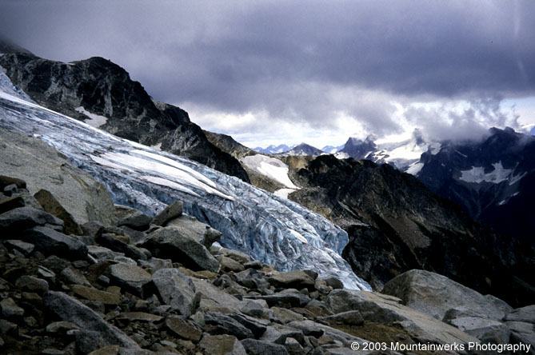
The Dome Glacier in unsettled weather.
At camp we took a blissful nap, waking when we realized the wind was picking up and it smelled like rain. Everyone else had left hours before. We suddenly hurried to pack up to get down to the lake in case of a storm, which might be unpleasant on the high ridge.
A beautiful but steep hike led us to the lake where we had dinner and settled in for the night. The basin above the lake looks so amazing, I stared at it for a long time. There was no rain in the night.
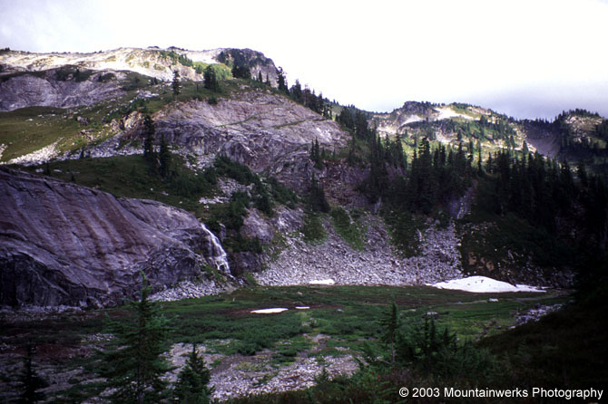
Basin above Cub Lake.
<a name=saturday></a>
Saturday <a href=#TOP>(To page top)</a>
So we hiked up to a pass and then descended Bachelor and Downey Creeks. Due to extensive avalanche debris, we lost the trail in Bachelor Creek, but were able to enter timber on the right side for a while, then go down and cross the stream and pick up the trail again on the other side. Now we put on our MP3 players and zoned out for a few hours. I listened to some of Theron’s 1930s radio programs, such as “The Potters of Firth,” and a great one about Cat People living in a town called Malton. A great quote in a sepulchral voice: “The night air of Malton is conducive to sleep.”
We reached the car about an hour before we expected to. We were hiking really fast, fueled by that acid rock the kids are listening to! It was such a great feeling to have hiked all this way. Oh the memories! 5 peaks, 40 miles, 20000 feet, 6 days. Damn what a great time. Thanks Theron!